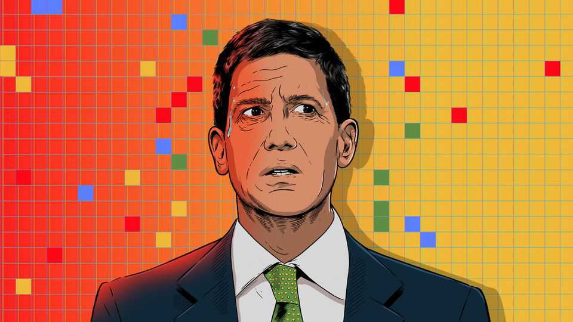
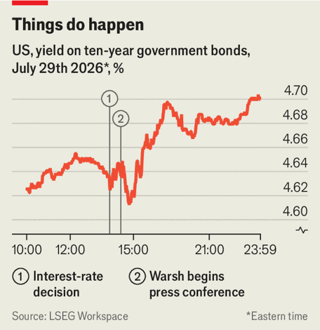

What will Kevin Warsh do if America’s economy breaks?
An enigmatic Fed faces the risk of AI stocks falling and the oil price soaring

Aug 6th 2026
For punters of a certain sort, Polymarket’s gambling platform offers an intriguing contract. “Nothing ever happens: 2026” is a bet named after a favoured mantra of bullish, very online traders. If none of roughly a dozen events, ranging from the unlikely to the outlandish, takes place during the year, the contract pays out a return of around 30%. That would require Donald Trump and Xi Jinping not to resign, bitcoin’s price to remain between $10,000 and $1m, the planet not to suffer a major earthquake, volcanic eruption or meteor strike, and so on. If one or more of these things does happen, the bettor loses everything.
Kevin Warsh, the newish chair of the Federal Reserve who recently took his second meeting with the central bank’s rate-setting committee, seems to be making a similar bet. The Economist does not know Mr Warsh’s views on volcanoes or meteors. But his peculiarly tight-lipped performance at a press conference following the rate-setting meeting made markets quake (see chart).

The ten-year Treasury yield jumped that day and finished the week above 4.7%, close to a three-year high, before retreating a bit. Stock prices, especially for rate-sensitive tech firms, wobbled—even though the Fed kept its interest rate unchanged. Mr Warsh hopes that if he keeps mum about what the Fed plans to do, markets will offer their own, helpfully independent, verdict on the economy.
He can probably afford the experiment, because a few tremors will do little harm if nothing ever happens. At worst, they nudge borrowing costs up, to compensate lenders for the extra uncertainty. But if something nasty does occur, then confusion about how the Fed might respond could worsen the resulting mess. Rather than reducing volatility, the Fed would be adding to it. Even Mr Warsh grants that, in a crisis, clear communication is “prudent”.
What are the chances that the Fed loses its leeway for ambiguity? Several medium-sized risks loom at once. The clearest is the sell-off in stocks related to artificial intelligence, both in America and, especially, in South Korea. When the dotcom bubble burst in 2000, the crash pulled the world economy into recession. Worryingly, today there are already signs of some big bets turning sour and causing investment firms to wobble. Situational Awareness, a multi-billion-dollar hedge fund, has taken spectacular losses over the past month. It was forced to unwind its positions so quickly that Citadel, a much larger fund, was able to scoop up most of its listed holdings at a discount.
For now the damage looks contained. Some AI shares have bounced back a bit; the tech-heavy Nasdaq index, though down 3% from its peak in June, is still up since the start of the year.
But if America’s tech stocks lose more of their shine, its economy could be in trouble. These days the dollar’s status as a haven owes much to how ravenous foreign investors are for American shares. Treasury bonds do not look so attractive after years of gaping budget deficits—and with inflation on the rise again. Last April, after Mr Trump announced his “Liberation Day” tariffs, America briefly saw what it looked like for international investors to dump all types of dollar asset at once. A protracted repeat is still a distant prospect, but could quickly turn nasty.
Another danger lies in the Strait of Hormuz. Since America’s shaky ceasefire with Iran fell apart, virtually no oil has traversed the strait, meaning prices have surged. A barrel of brent crude, the global benchmark, now fetches $80, up from around $70 at the start of July. Petrol prices in America are well over $4 per gallon, from $3 or so before the conflict started. And few prices bother American consumers more. Sharp increases can easily destabilise spending, inflation expectations and confidence in the Fed.
Worse, Mr Trump seems determined to make Mr Warsh’s life difficult. The stopgap authority the president used to impose tariffs, most of his previous ones having been struck down by the Supreme Court in February, expired on July 24th. Since then the White House has thrown up new, wide-ranging trade barriers to replace the expired ones, and has announced heftier levies on countries including Canada and Brazil. Companies are still yet to fully pass price increases from previous levies on to shoppers. Any further jumps could reverse recent declines in goods inflation.
Lots of potential not merely for something to happen, then, but for several things to happen at once. Perhaps the trickiest combination would be if stock markets calmed but oil and new tariffs pushed inflation up further. Usually, that would be a clear reason for the Fed’s governors to consider raising rates. Some have already voted to hike. But tightening monetary policy just ahead of November’s midterm elections would risk wrecking Mr Warsh’s relationship with the White House, reigniting ugly spats over the Fed’s independence.
It is possible that, in an attempt to avoid this, Mr Warsh is already trying to get the market to do his tightening work for him. In other words, by loudly reiterating his commitment to the Fed’s inflation target, without actually saying he will raise rates, he may hope that long-term bond yields will rise and stop him from needing to do so. The danger is that higher yields might instead reflect the risk of Mr Warsh’s experiment going wrong. “Nothing ever happens” can be a good bet. But central bankers’ reputations are made when something does. ■